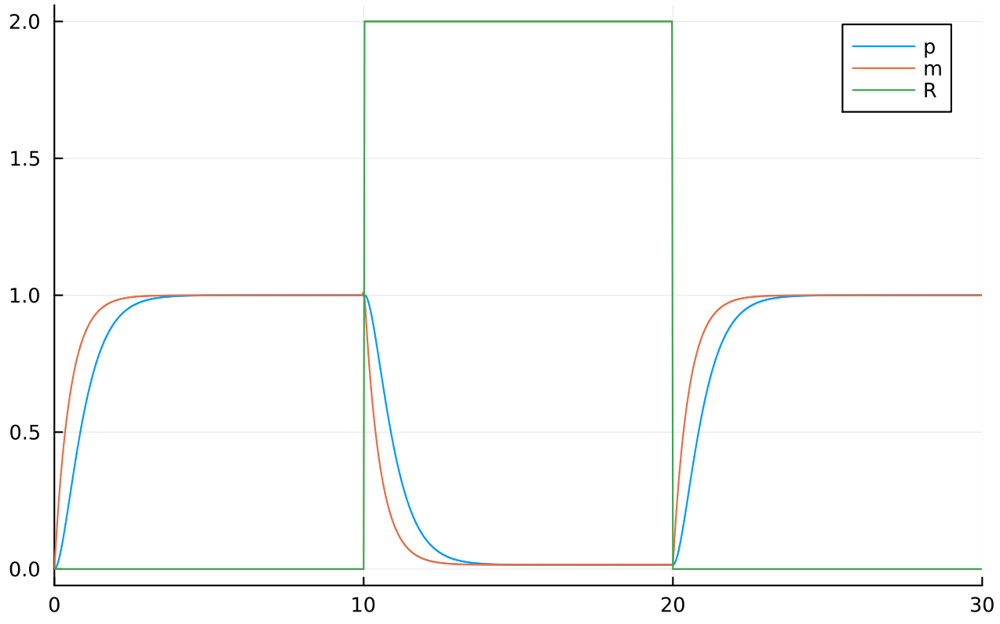
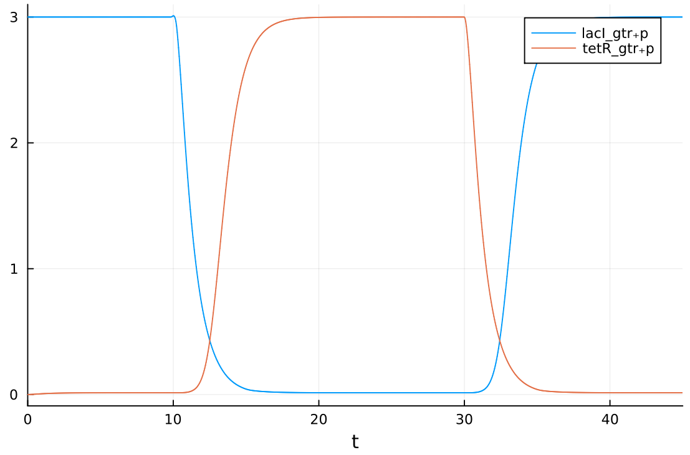
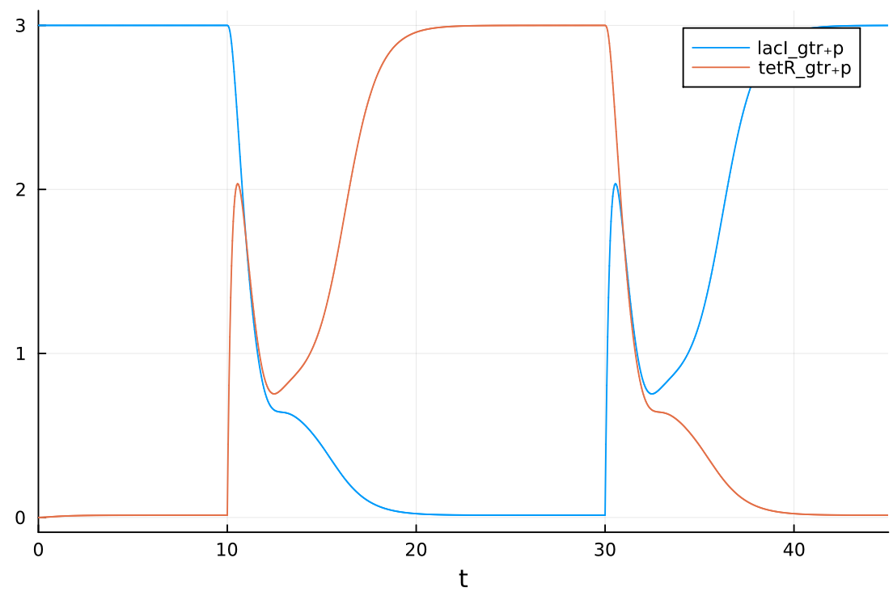

2023-10-11 (updated 2023-12-30)
Shwmae!
Mathematical models are used to create designs for systems in silico. The model can be used to test and optimise the design before implementing it in vivo or in vitro.
Over the course of this article I'll be using the simple example of gene transcription regulation by repressors to demonstrate the process of modelling with ordinary differential equations in Julia. We will then use the model to compose a more complex model of a toggle switch.
Rationale—Why Julia?
In other words, "why not Python/MATLAB/R?"
- Julia is an infix Lisp:
- Macros allow for beautifully elegant and flexible code
- Encouragement of the functional paradigm, making code all the easier to reason about
- Higher order functions such as
mapandreduce
- High performance, approaching that of statically typed languages:
- High efficiency => Less energy usage => Save money, save the environment
- Tasks complete faster
- Easy to implement parallel and distributed algorithms
- Built-in package manager with a delightful smorgasbord of libraries
- ModelingToolkit.jl :: Systems Modelling
- DifferentialEquations.jl :: Differential Equations
- DiffEqBiological.jl :: Useful for modelling chemical reaction networks
Modelling Gene Transcription By Repressors
Import libraries used for modelling—Plots is used to display the graph
of the simulated model, and DifferentialEquations:solve is used to solve the differential
equations. ModelingToolkit composes a number of useful tools for modelling, such as
the @mtkmodel macro.
using ModelingToolkit, Plots
using DifferentialEquations:solve
First we declare our independent variable for time, t.
Then we declare D as a differential equation with respect to t:
# Gene transcription regulation by repressors
# equations derived from 'Synthetic Biology - A Primer'
@variables t # time
D = Differential(t) # D is a derivative with respect to t
Declare the forcing function f_fun representing the concentration of transcriptional
repressor, R, over time. Register the function to prevent symbolic
transformations.
ModelingToolkit also supports discrete events, to avoid having to use a function to model the changes, but for simplicity's sake we will consider that later.
f_fun(t) = t > 5 ? 2. : 0. # after t = 5 add repressor
@register_symbolic f_fun(t) # register as forcing function for GTR
Define the model variables, parameters, and functions. @mtkmodel is a relatively recent addition
to ModelingToolkit.jl at the time of writing, so may not be available in older versions of Julia.
An equivalent, if more verbose solution can be obtained using ODESystem instead. In this example
we will be using @mtkmodel.
The equations we are modelling are: $$ \frac{\mathrm{d} m}{\mathrm{d}t} = \frac{K^{n} k_1}{R^{n} + K^{n}} - d_1 m $$ $$ \frac{\mathrm{d} p}{\mathrm{d}t} = - d_2 p + k_2 m $$
@mtkmodel GTR begin
@variables begin
m(t) # [mRNA] obtained from transcription, at time t
p(t) # [protein] from translation, at time t
R(t) # function to describe level of repressor
end
@parameters begin
k1 # maximal transcription rate
k2 # protein translation rate
K # repression coefficient
n # Hill coefficient
d1 # mRNA degradation rate
d2 # protein degradation rate
end
@equations begin
R ~ f_fun(t)
D(m) ~ k1 * K^n / (K^n + R^n) - d1 * m
D(p) ~ k2 * m - d2 * p
end
end
Solve the model for some given values, then plot as a graph:
@mtkbuild gtr = GTR()
println("ODE...")
prob = ODEProblem(gtr,
[gtr.m => 0, gtr.p => 0], # initial conditions
(0.0, 30.0), # range of t
[gtr.k1 => 1, # parameter values
gtr.k2 => 1,
gtr.K => 1,
gtr.n => 1,
gtr.d1 => 1,
gtr.d2 => 1,])
println("Solve...")
sol = solve(prob)
println("Plot...")
plot(sol, idxs = [gtr.p, gtr.m, gtr.R])
The generated graph:
Behold a graph:

Beautiful, is it not?
As expected, the concentration of protein lags behind that of mRNA. In t = [0,5),
the concentrations of mRNA and protein rise in a curve, then after the addition of
the repressor, we see a sharp decrease. This is in line with the expected behaviour,
whereby the repressor inhibits transcription. After the repressor is removed,
transcription is no longer repressed. Using these parameters we may find that
the level of protein does not fall to a sufficiently low concentration, so we can
adjust the parameter values to obtain the following:

Composability—The Toggle Switch
It is often useful to have models be composable, such that we can interconnect multiple models to create a more complex system (similarly to defining functions or objects in programming, each to be composed into a full program).
An example of this is the toggle switch (Gardner, Cantor et al. 2000), composed of two gene transcription repressors. The protein output of each transcription regulation system is used as a repressor for the other (remniscient of an SR-latch): $$ \frac{\mathrm{d} m_L}{\mathrm{d}t} = k_{T,1} \frac{K_T^{n_T}}{p^{n_T}_T + K^{n_T}_T} - d_{L,1} m_L $$ $$ \frac{\mathrm{d} p_L}{\mathrm{d}t} = k_{L,2} m_L - d_{L,2} p_L $$ $$ \frac{\mathrm{d} m_T}{\mathrm{d}t} = k_{L,1} \frac{K_L^{n_L}}{p^{n_L}_L + K^{n_L}_L} - d_{T,1} m_T $$ $$ \frac{\mathrm{d} p_T}{\mathrm{d}t} = k_{T,2} m_T - d_{T,2} p_T $$
Import the libraries:
using ModelingToolkit, Plots
using DifferentialEquations:solve
Declare t and D as before:
@variables t
D = Differential(t) # D is a derivative with respect to t
Define forcing functions representing inducer concentrations:
# toggle switch at 10 < t < 15 and 30 < t < 35
# represents added inducers
tetR_f_fun(t) = 10 < t && t < 15 ? 2. : 0.
lacI_f_fun(t) = 30 < t && t < 35 ? 2. : 0.
@register_symbolic lacI_f_fun(t) # register as forcing function for GTR
@register_symbolic tetR_f_fun(t) # register as forcing function for GTR
For the purposes of modularity, it is convenient to define a function to generate each component composing the system:
# define a function generating a GTR component
function gtr_factory(; name)
@parameters k1 k2 K n d1 d2
@variables t m(t) p(t) R(t)
# define differential equations composing component
eqs = [
D(m) ~ k1 * K^n / (K^n + R^n) - d1 * m,
D(p) ~ k2 * m - d2 * p
]
ODESystem(eqs; name)
end
We can then use this function to generate multiple GTR components without duplicating code:
# generate GTRs for each protein
@named lacI_gtr = gtr_factory()
@named tetR_gtr = gtr_factory()
Then we can compose the system. This connects the two subsystems such that the protein produced by each is used as the repressor for the other. This is then summed with the forcing function to represent the addition of inducers:
# connect the GTRs to form the toggle switch
connections = [
lacI_gtr.R ~ tetR_gtr.p + tetR_f_fun(t),
tetR_gtr.R ~ lacI_gtr.p + lacI_f_fun(t),
]
connected = compose(
ODESystem(connections, name = :connected),
lacI_gtr, tetR_gtr
)
# removes any unnecessary variables and equations
connected_simp = structural_simplify(connected)
And solve the system for some given initial values and parameters:
prob = ODEProblem(connected_simp, [
lacI_gtr.m => 3, tetR_gtr.m => 0,
lacI_gtr.p => 3, tetR_gtr.p => 0, # initially 'low'
lacI_gtr.R => 0, tetR_gtr.R => 0,
],
(0.0, 45.0), # time range 0.0 to 45.0
[
lacI_gtr.k1 => 3, tetR_gtr.k1 => 3, # transcription rate
lacI_gtr.k2 => 3, tetR_gtr.k2 => 3, # translation rate
lacI_gtr.K => 0.5, tetR_gtr.K => 0.5, # repression coefficient
lacI_gtr.n => 3, tetR_gtr.n => 3, # Hill coefficient
lacI_gtr.d1 => 1, tetR_gtr.d1 => 1, # proteins degrade slower
lacI_gtr.d2 => 3, tetR_gtr.d2 => 3, # than mRNA
])
# solve system
sol = solve(prob)
# generate graph
plot(sol, idxs = [
lacI_gtr.p,
tetR_gtr.p, # used as reporter
])
gui() # display graph
println("done - press enter to quit")
readline()
And this will produce the following graph:

Here the inducers are added over a period of 5 seconds then removed, toggling the switch. This occurs at 10 and 30 seconds.
Full texts of code:
repressilator.jl
using ModelingToolkit, Plots
using DifferentialEquations:solve
# Gene transcription regulation by repressors
# equations derived from 'Synthetic Biology - A Primer'
@variables t # time
D = Differential(t) # D is a derivative with respect to t
f_fun(t) = t > 5 ? 2. : 0. # after t = 5 add repressor
@register_symbolic f_fun(t) # register as forcing function for GTR
@mtkmodel GTR begin
@variables begin
m(t) # [mRNA] obtained from transcription, at time t
p(t) # [protein] from translation, at time t
R(t) # function to describe level of repressor
end
@parameters begin
k1 # maximal transcription rate
k2 # protein translation rate
K # repression coefficient
n # Hill coefficient
d1 # mRNA degradation rate
d2 # protein degradation rate
end
@equations begin
R ~ f_fun(t)
D(m) ~ k1 * K^n / (K^n + R^n) - d1 * m
D(p) ~ k2 * m - d2 * p
end
end
@mtkbuild gtr = GTR()
println("ODE...")
prob = ODEProblem(gtr,
[gtr.m => 0, gtr.p => 0], # initial conditions
(0.0, 30.0), # range of t
[gtr.k1 => 1, # parameter values
gtr.k2 => 1,
gtr.K => 1,
gtr.n => 1,
gtr.d1 => 1,
gtr.d2 => 1,])
println("Solve...")
sol = solve(prob)
println("Plot...")
plot(sol, idxs = [gtr.p, gtr.m, gtr.R])
toggleswitch.jl
using ModelingToolkit, Plots
using DifferentialEquations:solve
# Toggle Switch
# equations derived from 'Synthetic Biology - A Primer'
@variables t
D = Differential(t) # D is a derivative with respect to t
# toggle switch at 10 < t < 15 and 30 < t < 35
# represents added inducers
tetR_f_fun(t) = 10 < t && t < 15 ? 2. : 0.
lacI_f_fun(t) = 30 < t && t < 35 ? 2. : 0.
@register_symbolic lacI_f_fun(t) # register as forcing function for GTR
@register_symbolic tetR_f_fun(t) # register as forcing function for GTR
# define a function generating a GTR component
function gtr_factory(; name)
@parameters k1 k2 K n d1 d2
@variables t m(t) p(t) R(t)
eqs = [
D(m) ~ k1 * K^n / (K^n + R^n) - d1 * m,
D(p) ~ k2 * m - d2 * p
]
ODESystem(eqs; name)
end
# generate GTRs for each protein
@named lacI_gtr = gtr_factory()
@named tetR_gtr = gtr_factory()
# connect the GTRs to form the toggle switch
connections = [
lacI_gtr.R ~ tetR_gtr.p + tetR_f_fun(t),
tetR_gtr.R ~ lacI_gtr.p + lacI_f_fun(t),
]
connected = compose(
ODESystem(connections, name = :connected),
lacI_gtr, tetR_gtr
)
# removes any unnecessary variables and equations
connected_simp = structural_simplify(connected)
prob = ODEProblem(connected_simp, [
lacI_gtr.m => 3, tetR_gtr.m => 0,
lacI_gtr.p => 3, tetR_gtr.p => 0, # initially 'low'
lacI_gtr.R => 0, tetR_gtr.R => 0,
],
(0.0, 45.0), # time range 0.0 to 45.0
[
lacI_gtr.k1 => 3, tetR_gtr.k1 => 3, # transcription rate
lacI_gtr.k2 => 3, tetR_gtr.k2 => 3, # translation rate
lacI_gtr.K => 0.5, tetR_gtr.K => 0.5, # repression coefficient
lacI_gtr.n => 3, tetR_gtr.n => 3, # Hill coefficient
lacI_gtr.d1 => 1, tetR_gtr.d1 => 1, # proteins degrade slower
lacI_gtr.d2 => 3, tetR_gtr.d2 => 3, # than mRNA
])
# solve system
sol = solve(prob)
# generate graph
plot(sol, idxs = [
lacI_gtr.p,
tetR_gtr.p, # used as reporter
])
gui() # display graph
println("done - press enter to quit")
readline()
Discrete Events
At times we may want to instead model changes in the system by using events instead of functions, such as addition of some chemical species.
One way to achieve this in our toggle switch example is to add two more parameters to the model:
I and t_induce. These are respectively the amount of inducer to add, and the time to add
it at:
# define a function generating a GTR component
function gtr_factory(; name)
@parameters k1 k2 K n d1 d2 I t_induce
@variables t m(t) p(t) R(t)
eqs = [
D(m) ~ k1 * K^n / (K^n + R^n) - d1 * m,
D(p) ~ k2 * m - d2 * p,
]
# at time t_induce we add I inducer
# the inducer results in the promotion of mRNA production
inducement = (t == t_induce) => [m ~ m + I]
# we have to explicitly define our parameters since we don't
# use I or t_induce in eqs
ODESystem(eqs,t,[m,p,R],[k1,k2,K,n,d1,d2,I,t_induce];
discrete_events = inducement, name)
end
Then pass appropriate values in as parameters:
prob = ODEProblem(connected_simp, [
# initial conditions
lacI_gtr.m => 0, tetR_gtr.m => 3,
lacI_gtr.p => 0, tetR_gtr.p => 3,
lacI_gtr.R => 3, tetR_gtr.R => 0,
],
(0.0, 45.0), # time range 0.0 to 45.0
[
# parameter values
lacI_gtr.k1 => 3, tetR_gtr.k1 => 3, # transcription rate
lacI_gtr.k2 => 3, tetR_gtr.k2 => 3, # translation rate
lacI_gtr.K => 0.5, tetR_gtr.K => 0.5, # repression coefficient
lacI_gtr.n => 3, tetR_gtr.n => 3, # Hill coefficient
lacI_gtr.d1 => 1, tetR_gtr.d1 => 1, # proteins degrade slower
lacI_gtr.d2 => 3, tetR_gtr.d2 => 3, # than mRNA
lacI_gtr.t_induce => 30, # toggle at t = 10
tetR_gtr.t_induce => 10, # toggle at t = 30
lacI_gtr.I => 1.75, # amount of inducer
tetR_gtr.I => 1.75,
])
# solve system, stopping at 10 and 30 to add the inducers
sol = solve(prob; tstops = [10.0, 30.0])
And this produces:

It's not as smooth as the previous version, but it is perhaps somewhat more accurate, since the inducer is not modelled as an instantaneous rise and fall in repressor concentration, but instead as a sharp rise in mRNA followed by a gradual decrease in line with the rate of degradation.
For the inducement equation,
we could also use a range for t instead of t == t_induce
and use a constant value such as 3 instead of m + I, to
obtain behaviour more similar to the previous model, if you so pleased.
Next: Partial Differential Equations